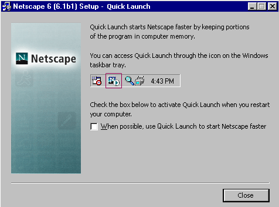
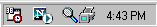
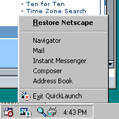

Quick Launch User Interface | Design Specification
German W. Bauer, Netscape Client UE July 4, 2001
Note: Icons are not final and for Netscape builds will be supplied by Netscape UI Group.
What is Quick Launch?
When Quick Launch is turned on, portions of Netscape are retained in memory in order to enable faster relaunching of the browser, remaining in memory even while no visible Netscape windows are open. Quick Launch will launch on every startup of the operating system to reduce the perceived initial startup time of Netscape. Currently this is implemented only for the Win32 platform.
UI Goals for this feature
- allow users to set this to on or off during Installation of Netscape
- make it clear to user whether Netscape currently running in background
- allow user to customize default behavior
- remind user of Quick Launch mode when they are closing the application
Turning on Quick Launch during Installation of Netscape
The installer wizard should provide on extra screen to let users turn this feature on (default off for Netscape 6.1, on for later versions). The feature is different enough that it warrants its own screen on the installer as it should not be overlooked.
The recommended place for this screen would be after the expanding of files has been completed and right before Netscape is launched for the first time. The screen should be similar in appearance to the installer screens and both contain a brief explanatory text as well as a checkbox control. The user this this screen only once by the native Installer.

Closing Netscape in Quick Launch mode
When either Exiting from the Menu "File" or after closing the last visible menu the user will expect that the application has stopped running. The user needs to be informed that Netscape will keep running in the background, and that a OS taskbar tray icon is available. Ideally this dialog shows a smalls screenshot of the icon in taskbar tray context as most users are not familiar with the terms taskbar and tray. (Win32 only for now)

Win32 Taskbar Tray icon behavior
The taskbar tray icon should follow standard Win32 behavior:
- single click or double click launches default action: Restore Netscape with default start configuration
- context click should reveal a menu to launch any of the components (same as can be found in the start menu)
- context menu should contain a "Exit Netscape Quick Launch" at
the bottom position, separated from the items above

Issues/Misc.
-
we have to make sure that theme switching and other profile specific settings work well with Quick Launch For example if users have multiple profiles, they expect to see the profile picker even when Quick Launch is on
- there is a current technical problem where Quick Launch cannot exit/be removed when Netscape currently has any windows open. The users might not be aware of open windows as they might be minimized. Ideally we would want to this problem to get fixed, but in the mean time we should bring up a dialog that states "Netscape currently has open windows. Please close these first before exiting Netscape Quick Launch". Investigate whether we can close the windows for them, in which case the dialog would state "To exit Netscape Quick Launch all open windows will have to be closed. Close windows now? [yes] [no]"
- we need to consolidate the task tray icon for Netscape Quick Launch with any possible task tray extensions the mail applications might provide like it did in 4.x. Ideally this would be the same application and it would be able to indicate available mail. (This however may conflict with the point above, where quick launch mode with no windows is profile agnostic)
Update - Dec. 4, 2001
Paul Chen, Netscape Navigator TeamThis update explains how the current Quick Launch implementation on the Mozilla trunk differs from the spec above.
Closing Mozilla in Quick Launch mode

This is the alert presented to the user when the last window is closed while
in Quick Launch mode.Win32 Taskbar Tray icon behavior

Mozilla currently does not have the "default" action at the top of the taskbar tray menu as pictured above in German's spec, and there is an extra item labeled "Disable Quick Launch" which is above the "Exit" menu item. This "Disable Quick Launch" menu item will pop up an alert telling the user Quick Launch is now disabled and how to re-enable it. It will then turn of the Quick Launch pref, and the taskbar tray icon will go away.

There is also no single click action for the taskbar tray icon. Double-clicking on the taskbar tray icon will bring to the front the last active Mozilla window if there are any; otherwise, when there are no windows open, Mozilla will create a new browser window.